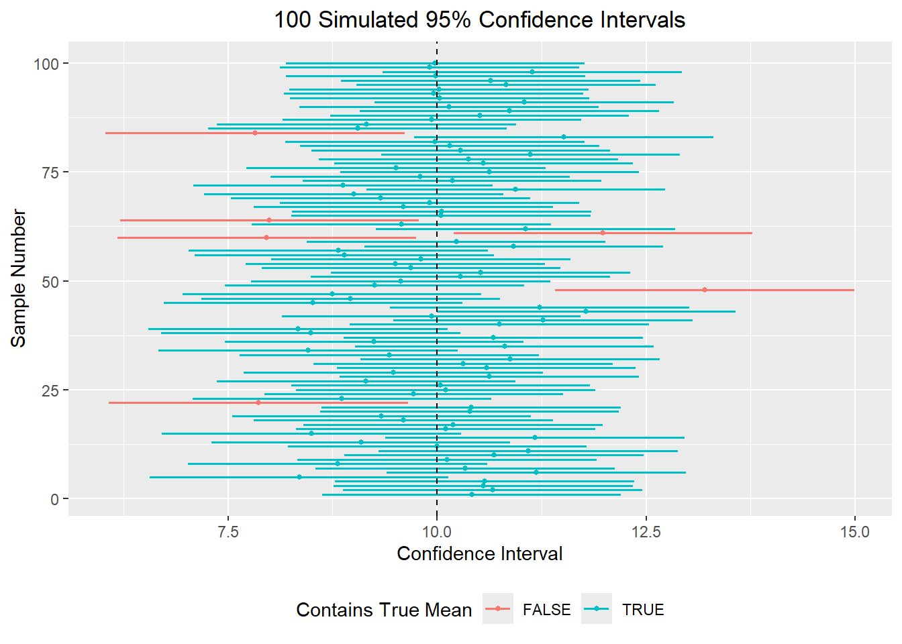
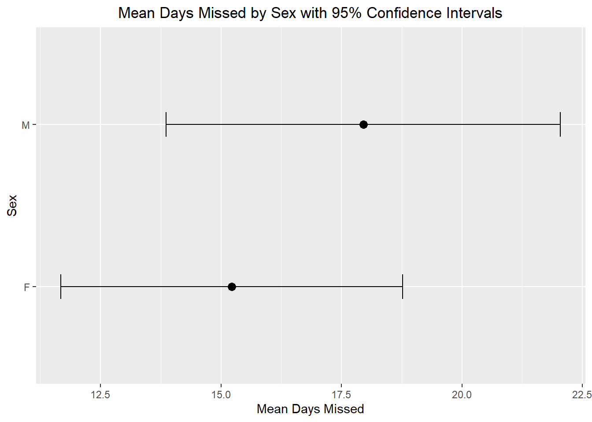
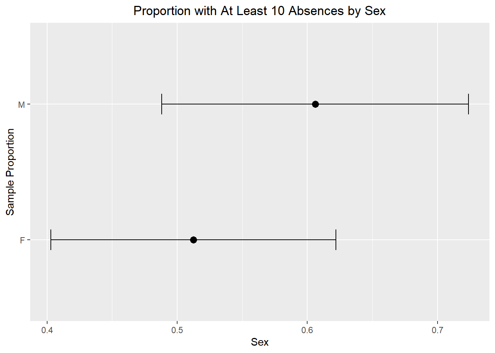

mean(rnorm(10, 50, 4))[1] 48.06mean(rnorm(10, 50, 4))[1] 51.78747In earlier sections, we used simulations to illustrate the Central Limit Theorem. We repeatedly took random samples from a population and observed that the sampling distribution of a statistic, such as the sample mean, began to look approximately normal when the sample size was sufficiently large. That idea is extremely important, because in practice we usually do not get to repeatedly sample from a population. Instead, we are typically given one sample and asked to use it to learn something about a population.
Suppose, for instance, that we are interested in the average number of days students miss school, the average weekly grocery bill for a family, or the proportion of students who are chronically absent. In each case, we usually do not have access to the full population. We only have a sample. Because a sample will vary from one random draw to another, our estimate will also vary. This uncertainty is exactly why confidence intervals are useful.
A confidence interval gives a range of plausible values for a population parameter. Rather than reporting only a single estimate, such as a sample mean or sample proportion, a confidence interval adds a margin of error to reflect the fact that our estimate came from only one sample.
A parameter is a numerical summary of a population, while a statistic is a numerical summary of a sample. Since we usually do not know the population parameter, we use a sample statistic to estimate it.
For example, if we want to estimate a population mean, then the sample mean is a natural place to start. But the sample mean will almost never be exactly equal to the population mean.
mean(rnorm(10, 50, 4))[1] 48.06mean(rnorm(10, 50, 4))[1] 51.78747In both cases, the population mean used to generate the data was 50, yet the sample mean changed from sample to sample. That is not a mistake, rather is is sampling variability. Because of this variability, reporting only a point estimate is not enough. We need a way to describe how uncertain our estimate might be, and that is the role of a confidence interval.
One of the most important ideas in this chapter is that a confidence interval is based on the idea of repeated sampling. If we were able to repeatedly take samples of the same size from the same population and build a confidence interval from each sample, then a fixed percentage of those intervals would contain the true population parameter.
For example, if we build 95% confidence intervals over and over again, then about 95% of those intervals should capture the true population parameter, while about 5% should miss it.
This means that a 95% confidence level describes the method, not the probability that the population parameter is in one particular interval. Once an interval has been computed, the true parameter is either in it or not. The 95% refers to how often the procedure succeeds in the long run. So when we say,
We are 95% confident that the population mean is between 12.4 and 15.8,
what we mean is that the process used to create that interval is a process that captures the true mean about 95% of the time in repeated sampling.
The Central Limit Theorem helps explain why confidence intervals work. If we repeatedly take random samples of size \(n\) from a population with mean \(\mu\) and standard deviation \(\sigma\), then for sufficiently large sample sizes, the sampling distribution of the sample mean is approximately normal with:
\[ \text{Mean of sampling distribution} = \mu \]
\[ \text{Standard deviation of sampling distribution} = \frac{\sigma}{\sqrt{n}} \]
The quantity \(\frac{\sigma}{\sqrt{n}}\) is called the standard error of the sample mean when the population standard deviation is known. It describes the typical distance between a sample mean and the true population mean.
This gives us the main structure of a confidence interval:
\[ \text{estimate} \pm \text{critical value} \times \text{standard error} \]
This same general pattern appears throughout inference. The estimate is the center of the interval, and the margin of error is determined by the critical value and the standard error.
To better understand what a confidence interval represents, let us imagine taking many random samples from the same population. Suppose the true population mean is 10. If we repeatedly take samples of size 30, each sample will have a slightly different sample mean. As a result, each sample will also produce a slightly different confidence interval.
If we construct a 95% confidence interval from each sample, then most of those intervals should contain the true population mean of 10, but a few will not. In the long run, about 95% of the intervals should capture the true mean.
library(dplyr)
set.seed(1)
mu <- 10
sigma <- 5
n <- 30
z <- qnorm(.975)
ci_sim <- data.frame(sample_id = 1:100) |>
rowwise() |>
mutate(sample_mean = mean(rnorm(n, mu, sigma)),
se = sigma / sqrt(n),
lower = sample_mean - z * se,
upper = sample_mean + z * se,
contains_mu = lower <= mu & upper >= mu) |>
ungroup()
head(ci_sim)# A tibble: 6 × 6
sample_id sample_mean se lower upper contains_mu
<int> <dbl> <dbl> <dbl> <dbl> <lgl>
1 1 10.4 0.913 8.62 12.2 TRUE
2 2 10.7 0.913 8.87 12.5 TRUE
3 3 10.6 0.913 8.76 12.3 TRUE
4 4 10.6 0.913 8.78 12.4 TRUE
5 5 8.35 0.913 6.56 10.1 TRUE
6 6 11.2 0.913 9.40 13.0 TRUE The graph below shows this idea visually. Each horizontal line represents one confidence interval, and the dashed vertical line marks the true population mean. Intervals that cross the dashed line contain the true mean, while intervals that do not cross the line miss it.

This helps us understand the meaning of 95% confidence. It refers to the success rate of the method over many repeated samples, not the probability that a single computed interval contains the true mean.
Suppose the population standard deviation \(\sigma\) is known. Then the standard error of the sample mean is:
\[ SE = \frac{\sigma}{\sqrt{n}} \]
A confidence interval for the population mean is defined as:
\[ \overline{x} \pm z_* \frac{\sigma}{\sqrt{n}} \]
or equivalently,
\[ \left(\overline{x} - z_* \frac{\sigma}{\sqrt{n}}, \overline{x} + z_* \frac{\sigma}{\sqrt{n}}\right) \]
where \(z_*\) is the critical value from the standard normal distribution based on the desired confidence level.
Some common values are:
We can find these values in R using the qnorm() function, which tells us the critical value if we have a certain percentage of the data to the left of the point:
qnorm(.95)[1] 1.644854qnorm(.975)[1] 1.959964qnorm(.995)[1] 2.575829Notice that for a 90% confidence interval, the middle 90% of the normal distribution leaves 5% in each tail, so we use qnorm(.95). For a 95% confidence interval, we leave 2.5% in each tail, so we use qnorm(.975).
Suppose we take a sample of size 30 from a population with mean 10 and standard deviation 5.
x <- rnorm(30, 10, 5)
xbar <- mean(x)
se <- 5/sqrt(30)
z <- qnorm(.975)
xbar + c(-1,1)*z*se[1] 7.866559 11.444947This gives a 95% confidence interval of (7.867, 11.445). The interval says that based on this sample, values between 7.867 and 11.445 are plausible values for the population mean.
If we take a different sample, we get a different interval:
x <- rnorm(30, 10, 5)
xbar <- mean(x)
se <- 5/sqrt(30)
z <- qnorm(.975)
xbar + c(-1,1)*z*se[1] 8.99990 12.57829This shows that confidence intervals vary from sample to sample.
Suppose you are interested in the weekly grocery cost for a family of 4. You collect a sample of 40 families and find a sample mean of $125. From earlier research, the population standard deviation is known to be $55. Constructing a 90% confidence interval and a 95% confidence interval we get the following:
xbar <- 125
se <- 55/sqrt(40)
z <- qnorm(.95)
xbar + c(-1,1)*z*se[1] 110.6959 139.3041z <- qnorm(.975)
xbar + c(-1,1)*z*se[1] 107.9556 142.0444So the 90% confidence interval is \((110.70, 139.30)\) and the 95% confidence interval is \((107.96, 142.04)\).
Notice that the 95% interval is wider. This happens because being more confident requires using a larger critical value, which increases the margin of error.
The width of a confidence interval depends mainly on three things:
This helps explain why collecting more data is often valuable in obtaining more precise confidence intervals. This is because the standard error contains \(\sqrt{n}\) in the denominator, so increasing the sample size shrinks the standard error and therefore shrinks the margin of error.
In many realistic situations, we do not know the population standard deviation \(\sigma\). If that happens, we estimate it using the sample standard deviation \(s\). That changes the standard error to:
\[ SE = \frac{s}{\sqrt{n}} \]
Since we are estimating the population standard deviation, there is additional uncertainty. To account for that, we use a Student’s t-distribution instead of the standard normal distribution.
A confidence interval for the population mean becomes:
\[ \overline{x} \pm t_* \frac{s}{\sqrt{n}} \]
where \(t_*\) is a critical value from the t-distribution with \(df = n-1\) degrees of freedom.
The t-distribution is similar to the normal distribution but has heavier tails. This gives a slightly larger margin of error, especially for small sample sizes. As the sample size increases, the t-distribution becomes closer and closer to the normal distribution.
qt(.95, df=2)[1] 2.919986qt(.95, df=10)[1] 1.812461qt(.95, df=1000)[1] 1.646379qnorm(.95)[1] 1.644854We can see that the t critical value is larger for small degrees of freedom, but gets closer to the z critical value as the sample size becomes large.
Suppose we take a sample of size 10 from a population with mean 10 and standard deviation 5.
set.seed(123)
x <- rnorm(10, 10, 5)
# If sigma were known
se <- 5/sqrt(10)
z <- qnorm(.975)
mean(x) + c(-1,1)*z*se[1] 7.274153 13.472103# If sigma is unknown
se <- sd(x)/sqrt(10)
t <- qt(.975, df=10-1)
mean(x) + c(-1,1)*t*se[1] 6.961648 13.784608The second interval uses the sample standard deviation instead of the population standard deviation. Because the sample standard deviation itself changes from sample to sample, the final interval can end up wider or narrower depending on the sample. In general, however, the t-method is designed to account for the extra uncertainty created by replacing \(\sigma\) with \(s\) and thus would be wider if all other values in the confidence interval were equal.
A t-interval for a population mean works best when:
In practice, this means:
A histogram or boxplot is often a useful first check before applying a t-procedure.
Suppose we want a 95% confidence interval for the mean number of days missed in the absenteeism dataset from the openintro package. We can calculate it “manually” to determine that with 95% confidence the population mean number of days missed lies between 13.80 and 19.12 days. Additionally, since we have the data avaliable to us in R, we can use the t.test() function and specife the conf.level to obtain a confidence interval. Our manual calculations should agree with the t.test() function.
library(openintro)
x <- absenteeism$days
mean(x) + c(-1,1)*qt(.975, df=length(x)-1)*sd(x)/sqrt(length(x))[1] 13.80032 19.11749t.test(x, conf.level = .95)$conf.int[1] 13.80032 19.11749
attr(,"conf.level")
[1] 0.95So far, we have focused on quantitative data and confidence intervals for a population mean. We can also create confidence intervals for categorical data, provided the outcome can be written as success/failure.
For example:
If we define one category as a success, then the population proportion is denoted by \(p\), and the sample proportion is:
\[ \hat{p} = \frac{\text{number of successes}}{n} \]
Just like the sample mean varies from sample to sample, the sample proportion also varies from sample to sample. The standard error of a sample proportion is:
\[ SE = \sqrt{\frac{p(1-p)}{n}} \]
Since the true population proportion \(p\) is usually unknown, we estimate it with \(\hat{p}\). This gives us the estimated standard error:
\[ SE = \sqrt{\frac{\hat{p}(1-\hat{p})}{n}} \]
A confidence interval for a population proportion is therefore:
\[ \hat{p} \pm z_* \sqrt{\frac{\hat{p}(1-\hat{p})}{n}} \]
or equivalently,
\[ \left(\hat{p} - z_* \sqrt{\frac{\hat{p}(1-\hat{p})}{n}}, \hat{p} + z_* \sqrt{\frac{\hat{p}(1-\hat{p})}{n}}\right) \]
To use this method, we typically want:
These conditions help ensure that the sampling distribution of \(\hat{p}\) is approximately normal.
Suppose we want to estimate the proportion of students in the absenteeism dataset who are male.
table(absenteeism$sex)
F M
80 66 phat <- 66/length(absenteeism$sex)
phat[1] 0.4520548se <- sqrt(phat*(1-phat)/length(absenteeism$sex))
phat + c(-1,1)*qnorm(.975)*se[1] 0.3713246 0.5327849This gives a 95% confidence interval of \((0.371, 0.533)\). So we are 95% confident that the proportion of students in the population who are male is between 37.1% and 53.3%.
Sometimes we are interested in a proportion within a specific group. In this dataset, we do not already have a yes/no variable such as chronic absence, but we can create one from the quantitative variable days.
For example, suppose we define a student as having high absence if they missed at least 10 days of school. We may then want to estimate the proportion of male students with high absence. To do this, we first subset the data to only males, then create the sample proportion of males with at least 10 absences, and finally use that proportion to build a confidence interval.
male_data <- absenteeism |> filter(sex == "M")
phat <- mean(male_data$days >= 10)
phat[1] 0.6060606n <- nrow(male_data)
se <- sqrt(phat * (1 - phat) / n)
phat + c(-1, 1) * qnorm(.975) * se[1] 0.4881782 0.7239430This is a confidence interval for the population proportion of male students who miss at least 10 days of school.
Confidence intervals for proportions follow the same repeated-sampling logic as confidence intervals for means. If we repeatedly sampled students and computed a 95% confidence interval for the proportion who are chronically absent, then about 95% of those intervals would capture the true population proportion.
\[ \text{estimate} \pm \text{critical value} \times \text{standard error} \]
For means, the estimate is \(\overline{x}\).
For proportions, the estimate is \(\hat{p}\).
In data science, we are often interested in comparing summaries across groups rather than computing just one interval for an entire dataset. This is a natural place to use dplyr.
Suppose we want to estimate the mean number of days missed for each sex in the absenteeism dataset and create a 95% confidence interval for each group.
mean_ci <- absenteeism |>
group_by(sex) |>
summarise(n = n(),
xbar = mean(days),
s = sd(days),
se = s / sqrt(n),
t_star = qt(.975, df = n - 1),
lower = xbar - t_star * se,
upper = xbar + t_star * se)
mean_ci# A tibble: 2 × 8
sex n xbar s se t_star lower upper
<fct> <int> <dbl> <dbl> <dbl> <dbl> <dbl> <dbl>
1 F 80 15.2 15.9 1.78 1.99 11.7 18.8
2 M 66 18.0 16.6 2.05 2.00 13.9 22.0This creates one row for each group and computes the sample size, sample mean, standard deviation, standard error, and confidence interval endpoints. In the plots below, each point represents the estimate for a group, and each error bar represents a 95% confidence interval. This gives us a visual way to compare groups without only relying on a table of numbers.
ggplot(mean_ci, aes(x = xbar, y = sex)) +
geom_point(size = 3) +
geom_errorbar(aes(xmin = lower, xmax = upper), width = 0.15) +
labs(title = "Mean Days Missed by Sex with 95% Confidence Intervals",
x = "Mean Days Missed", y = "Sex") +
theme(plot.title = element_text(hjust=0.5))
In this graph, each point represents the sample mean number of days missed for that group. The error bars show a 95% confidence interval for the population mean number of days missed. This gives us a visual summary of both the estimate and the uncertainty in that estimate.
We can do something similar for proportions. Since this dataset does not already contain a yes/no variable for chronic absence, we can create one from days. For example, suppose we define a student as having high absence if they missed at least 10 days of school. We may then want to estimate the proportion of students with high absence within each sex.
prop_ci <- absenteeism |>
mutate(high_absence = days >= 10) |>
group_by(sex) |>
summarise(n = n(),
phat = mean(high_absence),
se = sqrt(phat * (1 - phat) / n),
z_star = qnorm(.975),
lower = phat - z_star * se,
upper = phat + z_star * se)
prop_ci# A tibble: 2 × 7
sex n phat se z_star lower upper
<fct> <int> <dbl> <dbl> <dbl> <dbl> <dbl>
1 F 80 0.512 0.0559 1.96 0.403 0.622
2 M 66 0.606 0.0601 1.96 0.488 0.724ggplot(prop_ci, aes(x = phat, y = sex)) +
geom_point(size = 3) +
geom_errorbar(aes(xmin = lower, xmax = upper), width = 0.15) +
labs(title = "Proportion with At Least 10 Absences by Sex",
x = "Sex", y = "Sample Proportion") +
theme(plot.title = element_text(hjust=0.5))
In this graph, each point represents the sample proportion of students in that group who missed at least 10 days of school. The error bars show a 95% confidence interval for the population proportion. This helps us compare the groups while also remembering that our estimates come from a sample and therefore contain uncertainty.
Confidence intervals are often introduced in a one-variable setting, but we can also use them when one variable is being examined across levels of another variable.
For example:
These are simple examples of bivariate thinking, because we are no longer looking at just one variable in isolation. We are examining how one variable behaves across another.
Confidence intervals in grouped settings can help us describe patterns, but we should be careful not to overstate what they prove. For example, if two confidence intervals overlap, that does not automatically mean there is no statistically significant difference. Likewise, if they do not overlap, that strongly suggests a difference, but the proper way to test a difference would be with a formal two-sample inference procedure, which we will learn in future lectures.
A confidence interval gives a range of plausible values for a population parameter. It is built from three main ingredients:
\[ \text{estimate} \pm \text{critical value} \times \text{standard error} \]
For a population mean:
For a population proportion:
The most important conceptual idea is that confidence intervals are based on repeated sampling. A 95% confidence interval is produced by a method that captures the true parameter about 95% of the time in the long run. Finally, confidence intervals are not limited to one overall summary. With tools like dplyr, we can compute them across groups and begin using them in richer, bivariate data analysis settings.